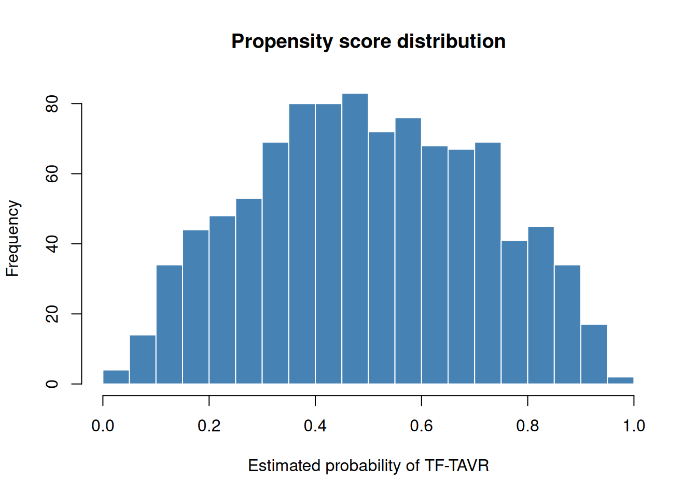

dta <- sample_ps_data(n = 500, seed = 42)
head(dta)
#> id tavr age female ef diabetes hypertension prob_t match
#> 1 1 0 88.96767 1 35.91940 0 1 0.1072885 0
#> 2 2 0 73.48241 0 32.50216 1 0 0.2258719 0
#> 3 3 0 80.90503 1 48.59300 0 1 0.3249308 0
#> 4 4 0 83.06290 0 53.74726 0 1 0.2872581 0
#> 5 5 0 81.23415 0 29.22222 1 1 0.0920883 0
#> 6 6 0 77.15100 0 54.90524 0 0 0.4674866 01 Overview
hvtiPropensityScores provides propensity score methods for cardiac surgery comparative-effectiveness research. It ports the balancing logic from our SAS programs into a tidy R API compatible with hvtiPlotR.
Two balancing strategies are supported:
-
Nearest-neighbour matching (
ps_match): 1:1 greedy matching without replacement, with optional caliper. -
Inverse-probability-of-treatment weighting (
ps_weight): IPTW for the ATE, ATT, or ATC estimand, with optional stabilisation and weight winsorisation.
Both functions share a common ps_data S3 base class and return an object whose $data slot carries the original data with the match indicator or weight column appended, and whose $tables slot carries standardised mean difference (SMD) diagnostics.
2 Sample data
sample_ps_data() generates a synthetic cardiac-surgery dataset that mimics a typical SAS export: two treatment arms (SAVR / TF-TAVR), several continuous and binary covariates, a fitted propensity score (prob_t), and a match indicator initialised to 0.
The two treatment groups differ on all covariates — younger patients with higher ejection fraction were more likely to receive TF-TAVR — so the raw SMDs are non-trivial and the propensity scores have good overlap.
hist(
dta$prob_t,
breaks = 30,
main = "Propensity score distribution",
xlab = "Estimated probability of TF-TAVR",
col = "steelblue",
border = "white"
)
3 Propensity score matching
3.1 Build the matched object
ps_match() performs greedy 1:1 nearest-neighbour matching without replacement.
3.2 Diagnostics
summary() prints the available diagnostic tables.
summary(m)
#> Summary of <ps_match>The $tables slot is a named list you can access directly:
m$tables$smd_before
#> variable smd
#> age age -0.7559
#> female female 0.1582
#> ef ef 0.5509
#> diabetes diabetes -0.1257
#> hypertension hypertension -0.0696
m$tables$smd_after
#> variable smd
#> age age -0.7559
#> female female 0.1582
#> ef ef 0.5509
#> diabetes diabetes -0.1257
#> hypertension hypertension -0.06963.3 Extract the matched dataset
$data is the full dataset with a match column set to 1 for matched pairs. Filter to match == 1 to obtain the matched subset.
3.4 Caliper matching
A caliper restricts matches to pairs whose propensity scores differ by no more than the supplied threshold, reducing the number of matched pairs in exchange for tighter balance.
4 Inverse-probability-of-treatment weighting
4.1 ATE weights (default)
ps_weight() computes IPTW weights and appends them to $data. The default estimand is the average treatment effect (ATE).
summary(w_ate)
#> Summary of <ps_weight>
#>
#> Group counts:
#> group n
#> 1 control 500
#> 2 treated 500
#>
#> Effective N:
#> group n_effective
#> 1 control 398.7
#> 2 treated 341.9The iptw column holds the stabilised weights.
head(w_ate$data[, c("id", "tavr", "prob_t", "iptw")])
#> id tavr prob_t iptw
#> 1 1 0 0.1072885 0.5600913
#> 2 2 0 0.2258719 0.6458879
#> 3 3 0 0.3249308 0.7406648
#> 4 4 0 0.2872581 0.7015162
#> 5 5 0 0.0920883 0.5507143
#> 6 6 0 0.4674866 0.9389434
summary(w_ate$data$iptw)
#> Min. 1st Qu. Median Mean 3rd Qu. Max.
#> 0.5184 0.6745 0.8272 0.9977 1.1234 10.35684.2 ATT and ATC weights
For the average treatment effect on the treated (ATT), treated patients receive weight 1 and controls receive ps / (1 - ps).
For the average treatment effect on the controls (ATC), the roles are reversed.
4.3 Weight trimming (winsorisation)
Extreme weights can destabilise estimates. Supplying trim winsorises weights to the (trim, 1 - trim) quantile range.
5 Downstream use with hvtiPlotR
The $data and $tables slots are designed for direct consumption by hvtiPlotR::hv_mirror_hist() (weighted mode) and hvtiPlotR::hv_balance().
5.1 Mirror histogram (matched)
5.2 Mirror histogram (weighted)
6 Session info
sessionInfo()
#> R version 4.5.3 (2026-03-11)
#> Platform: x86_64-pc-linux-gnu
#> Running under: Ubuntu 24.04.4 LTS
#>
#> Matrix products: default
#> BLAS: /usr/lib/x86_64-linux-gnu/openblas-pthread/libblas.so.3
#> LAPACK: /usr/lib/x86_64-linux-gnu/openblas-pthread/libopenblasp-r0.3.26.so; LAPACK version 3.12.0
#>
#> locale:
#> [1] LC_CTYPE=C.UTF-8 LC_NUMERIC=C LC_TIME=C.UTF-8
#> [4] LC_COLLATE=C.UTF-8 LC_MONETARY=C.UTF-8 LC_MESSAGES=C.UTF-8
#> [7] LC_PAPER=C.UTF-8 LC_NAME=C LC_ADDRESS=C
#> [10] LC_TELEPHONE=C LC_MEASUREMENT=C.UTF-8 LC_IDENTIFICATION=C
#>
#> time zone: UTC
#> tzcode source: system (glibc)
#>
#> attached base packages:
#> [1] stats graphics grDevices utils datasets methods base
#>
#> other attached packages:
#> [1] hvtiPropensityScores_0.0.0.9000
#>
#> loaded via a namespace (and not attached):
#> [1] compiler_4.5.3 fastmap_1.2.0 cli_3.6.5 tools_4.5.3
#> [5] htmltools_0.5.9 otel_0.2.0 yaml_2.3.12 rmarkdown_2.31
#> [9] knitr_1.51 jsonlite_2.0.0 xfun_0.57 digest_0.6.39
#> [13] rlang_1.1.7 evaluate_1.0.5